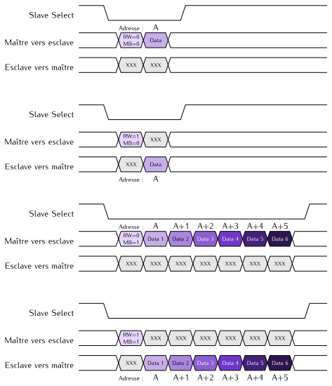

Le module PmodACL
de la société Digilent comporte un accéléromètre trois axes
ADXL345 (Analog Devices).
L’interface de communication avec le FPGA est un bus SPI.
Dans cette page, vous trouverez les informations de base permettant de mesurer
périodiquement les valeurs de l’accélération selon les axes X, Y et Z.
Le composant ADXL345 offre un grand nombre d’autres possibilités
(détection de chocs, détection de chute libre, modes d’économie d’énergie)
qui sont détaillées dans sa documentation constructeur.
Communication avec l’accéléromètre
La communication avec l’accéléromètre se fait par émission ou réception de séquences d’octets.
Le signal slave select permet d’indiquer le début et la fin d’une séquence.
Il est actif au niveau bas et son utilisation est résumée par le chronogramme ci-dessous :

Les trames SPI doivent respecter les contraintes suivantes :
| Fréquence max de l'horloge SPI |
5 MHz |
| Polarité |
1 |
| Phase |
1 |
Lecture et écriture des registres internes de l’accéléromètre
Une séquence commence toujours par un octet du maître vers l’esclave
qui doit respecter le format suivant :
| 7 |
6 |
5 |
4 |
3 |
2 |
1 |
0 |
| RW |
MB |
A (Adresse) |
Les 6 bits de poids faible indiquent l’adresse A du registre de l’accéléromètre que vous souhaitez lire ou modifier.
Le bit 7 (RW pour Read/Write) indique si l’opération est une lecture (RW = 1) ou une écriture (RW = ‹ 0 ›).
Le bit 6 (MB pour MultiByte) indique si la lecture ou l’écriture doit se faire en séquence sur plusieurs registres contigus :
- Si
MB = 0, le second octet de la séquence transportera la valeur du registre sélectionné.
- Si
MB = 1, si A est l’adresse spécifiée dans le premier octet, les N octets suivants
transporteront les valeurs des registres aux adresses successives A, A+1, A+2, … A+N-1
Quatre scénarios peuvent donc se présenter (XXX représente des valeurs indifférentes) :

Identification de l’accéléromètre
Le registre situé à l’adresse 0 retourne toujours la valeur E5hex.
Cela permet de vérifier que le périphérique SPI est bien connecté et qu’il s’agit
bien d’un accéléromètre ADXL345.
Paramétrage de l’accéléromètre
Plage de mesure d’accélération
Le registre situé à l’adresse 31hex permet de configurer la valeur maximale de l’accélération à mesurer.
L’octet à écrire dans ce registre aura le format suivant :
| 7 |
6 |
5 |
4 |
3 |
2 |
1 |
0 |
| 0 |
0 |
0 |
0 |
FR |
0 |
G1 |
G0 |
Lorsqu’il est à 1, le bit FR (Full Resolution) permet d’exploiter la résolution maximale du capteur,
c’est-à-dire avec une précision de 0,004 g.
Lorsque FR = 0, les mesures d’accélération sont toujours sur 10 bits, quelle
que soit la plage de mesure.
Les bits G0 et G1 déterminent la plage de mesure de la manière suivante :
| G1 |
G0 |
Plage |
| 0 |
0 |
± 2 g |
| 0 |
1 |
± 4 g |
| 1 |
0 |
± 8 g |
| 1 |
1 |
± 16 g |
Fréquence d’échantillonnage
Le registre situé à l’adresse 2Chex permet de configurer la fréquence des mesures.
L’octet à écrire dans ce registre aura le format suivant :
| 7 |
6 |
5 |
4 |
3 |
2 |
1 |
0 |
| 0 |
0 |
0 |
0 |
R3 |
R2 |
R1 |
R0 |
Il y a donc 16 fréquences d’échantillonnage possibles qui sont calculées de la manière suivantes
à partir de la valeur R codée dans le registre :
F=25625×2Ravec0≤R≤15
Mise en service des mesures
Le registre situé à l’adresse 2Dhex définit le mode de fonctionnement de l’accéléromètre.
Pour effectuer des mesures en continu, il suffit de lui donner la valeur suivante :
| 7 |
6 |
5 |
4 |
3 |
2 |
1 |
0 |
| 0 |
0 |
0 |
0 |
1 |
0 |
0 |
0 |
Lecture de l’accélération
Les valeurs d’accélération peuvent être lues dans les registres suivants :
| Adresse |
Valeur |
| 32hex |
Accélération selon l’axe X (octet de poids faible) |
| 33hex |
Accélération selon l’axe X (octet de poids fort) |
| 34hex |
Accélération selon l’axe Y (octet de poids faible) |
| 35hex |
Accélération selon l’axe Y (octet de poids fort) |
| 36hex |
Accélération selon l’axe Z (octet de poids faible) |
| 37hex |
Accélération selon l’axe Z (octet de poids fort) |
{kind=link}